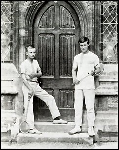
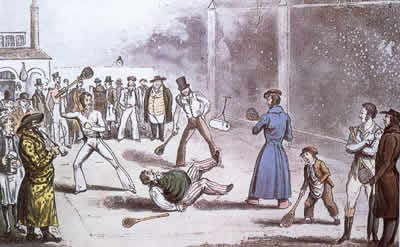
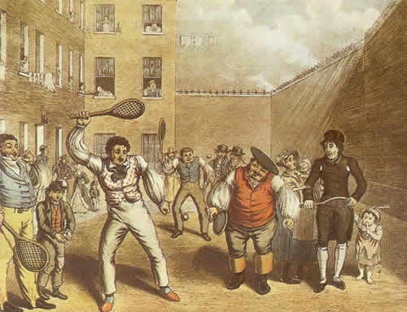

Rackets began in the 18th century in London's King's Bench and Fleet debtors' prisons. Prisoners modified the game of fives by using tennis rackets to speed up the action and played against the prison walls. The game spread outside prisons, played on school walls and later in purpose-built four-wall courts.
At Eglinton Castle in Scotland, the "Racket Hall" built shortly after 1839 and first used in 1846 is the oldest covered racket court in the world. Rackets, along with real tennis and badminton, inspired the development of lawn tennis. Walter Clopton Wingfield claimed to have invented lawn tennis in 1873, but others had been playing since as early as 1859. Wingfield's hourglass-shaped court design was soon abandoned.
In 1942, a vacant rackets court at the University of Chicago was the site of the first artificial nuclear chain reaction. Rackets was part of the 1908 London Olympics, with Evan Noel winning the event. After World War II, the sport declined, but Dick Bridgeman established a foundation to support it, now known as the Tennis and Racquets Foundation.
The Book of Racquets, published by J. R. Atkins in 1872, was reprinted in 1981 as a limited edition.
R. P. Keigwin (right) with AEJ Collins the college's rackets team at Clifton College c. 1902
Rackets being played at a prison—where the game developed
A Toff playing with the rabble in prison
Racquet sports offer numerous benefits, including strengthening cardiovascular health, building muscle, and supporting mental well-being. Studies have shown that people who regularly play racquet sports have a lower risk of death compared to those who do not exercise.